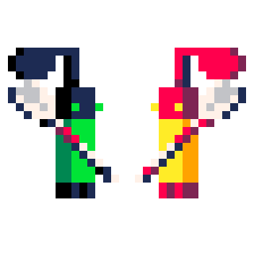

Paddle is een game waar twee groepen van twee nootjes op een boot over de rotsenzee vaart. Jij en je partner moeten ervoor zorgen dat jullie zover als mogelijk komt, zonder alle nootjes van jullie boot te laten vallen!
Gameloop
Varen rondom obstakels
Tijdens het spel komen jullie obstakels tegen. Dit in de vorm van rotsen. het is de bedoeling dat jullie, wanneer deze eraan komen, klaar zitten om te pedellen. Want door de rotsen heen varen is niet handig!

pedellen!
Om ervoor te zorgen dat jij en je teamgenoot niet van de boot vallen, zul je moeten pedellen. Maar pas op! Kijk goed uit welke kan je opmoet! In het dit geval kan je rechts of linksom. Dus je zult met je teamgenoot moeten overleggen wie roeit. Roei jullie namelijk alle twee dan...

knalt de boot op de kliffen
Zorg ervoor dat je niet op de kliffen botst. Want dat maakt het roeien nog moeilijker. Want bij een botsing zal een van de nootjes van boord vallen! De achtergebleven noot zal daardoor meer moeten roeien om de achtergebleven noot te vervangen!